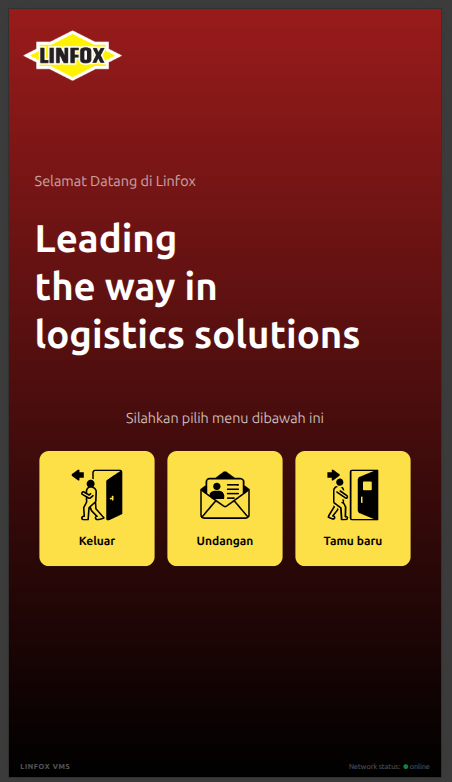

Sistem Operasional
Visitor Management
VMS — PT Linfox Indonesia
Sistem manajemen tamu untuk menyederhanakan registrasi, persetujuan, dan pelacakan pengunjung di lingkungan gudang. Mendukung tamu walk-in dan undangan, alur persetujuan tamu walk-in, check-in/check-out mandiri, dashboard pemantauan real-time, serta role akses Security, Receptionist, dan Admin. Dilengkapi sistem undangan melalui tautan publik WhatsApp dan email.